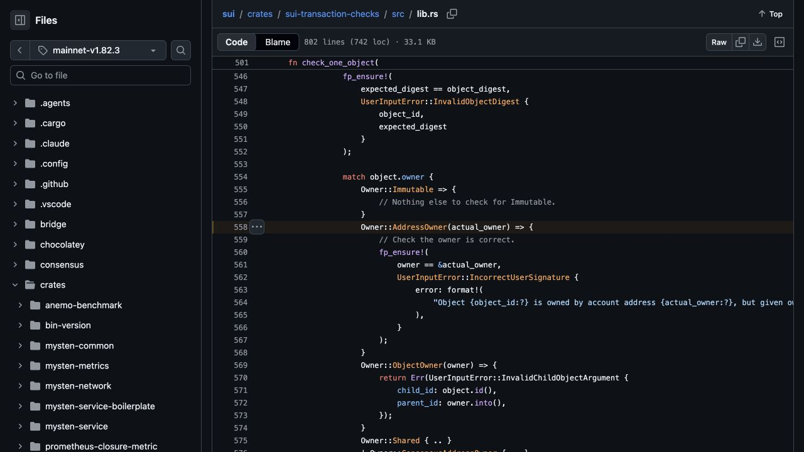
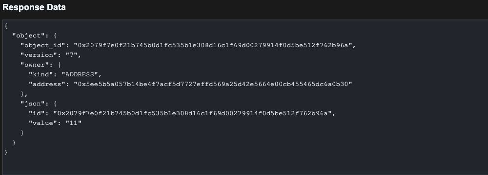

In the first Sui article, we separated an object’s Move value from the runtime record around it. We inspected identity, ownership, versions, and stored data. That gives us the vocabulary for a more practical question: when an object changes owners, which permissions move with it?
It is tempting to say that the owner controls the object and leave the explanation there. A real application can require more than ownership. Our notebook has an integer value, and its setter also requires a separate capability. The notebook and that capability are two independently owned objects.
We will give both objects to Alice, transfer only the notebook to Bob, and try the same update from both accounts. Then we will transfer the matching capability and repeat the call. Move tests, actual local-node rejections, and Python reads will let us follow the permission through each state.
The entire experiment runs on a disposable local Sui network. We will use Move for the rule, the Sui CLI for local transactions, and Python for native gRPC inspection. The goal is to understand one mechanism deeply: how access to existing address-owned inputs combines with a capability check inside a Move function.
Imagine that Alice gives Bob a notebook but keeps the separate object that authorizes changes to it. Bob now owns the notebook. Alice still owns its capability. Can either account change the notebook’s value? To answer that, we need to follow the objects into the setter rather than interpret “owner” as an unlimited application role.
Our set_value function accepts &mut Notebook, &NotebookCap, and a new integer. The mutable reference lets the function change the notebook. The immutable reference lets it inspect the capability without changing its application fields. These references exist during execution. A client reading an object ID from an API has not obtained a Move reference.
For the address-owned objects in this experiment, Sui first checks whether the transaction sender may supply each existing object as an input. Once the inputs are accepted, the setter compares the notebook’s ID with the notebook ID recorded inside the capability. Those checks answer separate questions: can this sender supply both objects, and do these two objects form an allowed pair? See address-owned objects and the capability pattern.
There are three identifiers to keep straight. Notebook.id identifies the notebook. NotebookCap.id identifies the capability object itself. NotebookCap.notebook records which notebook that capability authorizes. The third field is an ID value inside the capability, not a third object and not an ownership declaration.
Neither struct will contain an owner field. Address ownership belongs to Sui’s surrounding object record. Moving the notebook to Bob changes that record. It does not automatically rewrite the separate capability’s fields or move the capability with it. We will inspect both records after each important step.
We need two accounts whose keys we control, because the experiment intentionally attempts calls from each side of a handover. A fresh local network gives us prefunded development accounts and reproducible rules without using public-network assets. Its object IDs and account addresses will differ on your machine. Keep the variables generated below rather than copying the IDs from my output.
The commands below target macOS on Apple Silicon with Bash or Zsh, Git, curl, and Python 3.13 available. Git is used when the Move toolchain fetches its framework sources. The CLI is pinned to the same official mainnet-v1.82.3 release used for the first article. That release label selects the toolchain. Our configuration selects a new local network. Other platforms should use their corresponding asset from the official release.
In terminal one, create the working directory and install the pinned CLI locally:
Run:
mkdir -p sui-ownership cd sui-ownership mkdir -p .tools/bin .local/network move/sources move/tests client evidence curl -fL https://github.com/MystenLabs/sui/releases/download/mainnet-v1.82.3/sui-mainnet-v1.82.3-macos-arm64.tgz -o .tools/sui.tgz printf '%s %s\n' 861f8833c5c7008c86aca50e925043baa8e04332dcbd846cc6c31ea0eee16be9 .tools/sui.tgz | shasum -a 256 -c - tar -xzf .tools/sui.tgz -C .tools/bin export PATH="$PWD/.tools/bin:$PATH" sui --version
Output: Checksum and version lines from the verified archive. Download progress is omitted.
.tools/sui.tgz: OK sui 1.82.3-bf4073918ed3
If this CLI is already installed, you can reuse it after checking its version. The project paths below are absolute before we enter the Move directory, so the CLI configuration and framework cache remain the same in both directories.
Run:
export SUI_CONFIG_DIR="$PWD/.local/network" export MOVE_HOME="$PWD/.local/move-cache" sui genesis --working-dir "$SUI_CONFIG_DIR" --with-faucet --committee-size 1 --epoch-duration-ms 86400000 sui start --network.config "$SUI_CONFIG_DIR" --with-faucet --fullnode-rpc-port 9000
The genesis command creates the local network configuration, keystore, and prefunded accounts. The start command stays running in terminal one. Leave it running for the remaining steps. Use a new working directory for this experiment, and keep its generated keystore private. Port 9000 must be available.
Open terminal two in the same sui-ownership directory. All remaining commands run there unless a command explicitly enters move. Select the first two generated accounts as Alice and Bob:
Run:
export PATH="$PWD/.tools/bin:$PATH"
export SUI_CONFIG_DIR="$PWD/.local/network"
export MOVE_HOME="$PWD/.local/move-cache"
export SUI_GRPC_ENDPOINT=127.0.0.1:9000
sui client addresses --json > evidence/addresses.json
ALICE=$(python3 -c 'import json; print(json.load(open("evidence/addresses.json"))["addresses"][0][1])')
BOB=$(python3 -c 'import json; print(json.load(open("evidence/addresses.json"))["addresses"][1][1])')
CHAIN_ID=$(sui client chain-identifier --json | python3 -c 'import json, sys; print(json.load(sys.stdin)["base58"])')
printf 'ALICE=%s\nBOB=%s\nCHAIN_ID=%s\n' "$ALICE" "$BOB" "$CHAIN_ID"
Output:
ALICE=0x410f18714ece8ff57f0b404e729c4fc5904162e4ef9ade903622c79b8c69b59c BOB=0x5ee5b5a057b14be4f7acf5d7727effd569a25d42e5664e00cb455465dc6a0b30 CHAIN_ID=5xmhnG4ka4fxZh4EFVL3UsRvSoNG8WKWahRmGpUgvpae
The short Python commands only extract fields from CLI JSON. They install nothing and handle no secret keys. Alice and Bob are labels for two fresh local accounts, not fixed addresses supplied by the module.
Let’s create move/Move.toml using a shell heredoc. It inserts the chain identifier returned by our running node:
Run:
cat > move/Move.toml <<EOF [package] name = "sui_ownership" edition = "2024" [environments] localnet = "$CHAIN_ID" EOF
The package name supplies its automatic named address. Publication assigns the onchain package address. The localnet environment connects this package configuration with our generated chain. The pinned CLI supplies its framework dependencies, and the first build fetches those sources if they are not cached.
Let’s create a file named move/sources/notebook.move:
module sui_ownership::notebook;
const EWrongNotebook: u64 = 0;
public struct Notebook has key, store {
id: UID,
value: u64,
}
public struct NotebookCap has key, store {
id: UID,
notebook: ID,
}
public fun create(value: u64, ctx: &mut TxContext): (Notebook, NotebookCap) {
let notebook = Notebook { id: object::new(ctx), value };
let cap = NotebookCap {
id: object::new(ctx),
notebook: object::id(¬ebook),
};
(notebook, cap)
}
public fun create_owned(value: u64, ctx: &mut TxContext) {
let (notebook, cap) = create(value, ctx);
transfer::transfer(notebook, ctx.sender());
transfer::transfer(cap, ctx.sender());
}
public fun value(notebook: &Notebook): u64 {
notebook.value
}
public fun set_value(notebook: &mut Notebook, cap: &NotebookCap, value: u64) {
assert!(object::id(notebook) == cap.notebook, EWrongNotebook);
notebook.value = value;
}
#[test_only]
public fun destroy_for_testing(notebook: Notebook, cap: NotebookCap) {
let Notebook { id, value: _ } = notebook;
object::delete(id);
let NotebookCap { id, notebook: _ } = cap;
object::delete(id);
}
Run:
cd move sui move build cd ..
Output:
INCLUDING DEPENDENCY MoveStdlib
INCLUDING DEPENDENCY Sui
BUILDING sui_ownership
warning[WSL06002]: non-composable transfer to sender
┌─ ./sources/notebook.move:26:5
│
24 │ public fun create_owned(value: u64, ctx: &mut TxContext) {
│ ------------ Returning an object from a function, allows a caller to use the object and enables composability via programmable transactions.
25 │ let (notebook, cap) = create(value, ctx);
26 │ transfer::transfer(notebook, ctx.sender());
│ ^^^^^^^^^^^^^^^^^^^^^^^^^^^^^^^^^^^^^^^^^^
│ │ │
│ │ Transaction sender address coming from here
│ Transfer of an object to transaction sender address
│
= This warning can be suppressed with '#[allow(lint(self_transfer))]' applied to the 'module' or module member ('const', 'fun', or 'struct')
warning[WSL06002]: non-composable transfer to sender
┌─ ./sources/notebook.move:27:5
│
24 │ public fun create_owned(value: u64, ctx: &mut TxContext) {
│ ------------ Returning an object from a function, allows a caller to use the object and enables composability via programmable transactions.
·
27 │ transfer::transfer(cap, ctx.sender());
│ ^^^^^^^^^^^^^^^^^^^^^^^^^^^^^^^^^^^^^
│ │ │
│ │ Transaction sender address coming from here
│ Transfer of an object to transaction sender address
│
= This warning can be suppressed with '#[allow(lint(self_transfer))]' applied to the 'module' or module member ('const', 'fun', or 'struct')
Please report feedback on the linter warnings at https://forums.sui.io
The build succeeds. Its two lint warnings concern the convenience wrapper create_owned, which sends objects directly to the sender. Returning objects gives callers more flexibility in a programmable transaction. We retain that composable create function and add the wrapper only to make this small CLI experiment straightforward.
The constructor creates a fresh UID for each object, then copies the notebook’s ID into cap.notebook. The capability’s own UID remains different. This is where the relationship is established. The setter later checks that relationship with assert!, using abort code 0 when it fails.
The word Cap has no special enforcement behavior. Our module gives the object its meaning by creating the binding and requiring it in set_value. Other modules can name the public type, but they cannot directly construct this struct or rewrite its private fields. Public constructors and exposed operations therefore matter as much as the type’s name. See Move structs and field access.
Both types have key, store. Their owners can transfer them independently through Sui’s public transfer operation. This is why the split ownership state we are about to create is permitted. Our capability protects this setter. It does not require every transfer of the notebook to include the capability. See the transfer module.
Before publishing, we can test the handover and the relationship check locally. The scenario framework models a sequence of senders and object inventories. Its Alice and Bob use the short fixture addresses @0xA and @0xB, independent of our generated local accounts. Two tests deliberately request an object absent from the simulated sender’s inventory. A separate test supplies a correctly typed capability created for another notebook.
Let’s create a file named move/tests/handover_tests.move:
#[test_only]
module sui_ownership::handover_tests;
use sui::test_scenario;
use sui_ownership::notebook::{Self, Notebook, NotebookCap};
const ALICE: address = @0xA;
const BOB: address = @0xB;
#[test]
fun test_complete_handover() {
let mut scenario = test_scenario::begin(ALICE);
notebook::create_owned(7, scenario.ctx());
scenario.next_tx(ALICE);
let mut note = scenario.take_from_sender<Notebook>();
let cap = scenario.take_from_sender<NotebookCap>();
let original_id = object::id(¬e);
notebook::set_value(&mut note, &cap, 9);
scenario.return_to_sender(cap);
transfer::public_transfer(note, BOB);
scenario.next_tx(BOB);
assert!(scenario.has_most_recent_for_sender<Notebook>(), 1);
assert!(!scenario.has_most_recent_for_sender<NotebookCap>(), 2);
scenario.next_tx(ALICE);
assert!(!scenario.has_most_recent_for_sender<Notebook>(), 3);
let cap = scenario.take_from_sender<NotebookCap>();
transfer::public_transfer(cap, BOB);
scenario.next_tx(BOB);
let mut note = scenario.take_from_sender<Notebook>();
let cap = scenario.take_from_sender<NotebookCap>();
assert!(object::id(¬e) == original_id, 4);
notebook::set_value(&mut note, &cap, 11);
assert!(notebook::value(¬e) == 11, 5);
scenario.return_to_sender(note);
scenario.return_to_sender(cap);
scenario.end();
}
#[test]
#[expected_failure(abort_code = 3, location = sui::test_scenario)]
fun test_bob_cannot_take_alices_capability() {
let mut scenario = test_scenario::begin(ALICE);
notebook::create_owned(7, scenario.ctx());
scenario.next_tx(ALICE);
let note = scenario.take_from_sender<Notebook>();
transfer::public_transfer(note, BOB);
scenario.next_tx(BOB);
let cap = scenario.take_from_sender<NotebookCap>();
scenario.return_to_sender(cap);
scenario.end();
}
#[test]
#[expected_failure(abort_code = 3, location = sui::test_scenario)]
fun test_alice_cannot_take_bobs_notebook() {
let mut scenario = test_scenario::begin(ALICE);
notebook::create_owned(7, scenario.ctx());
scenario.next_tx(ALICE);
let note = scenario.take_from_sender<Notebook>();
transfer::public_transfer(note, BOB);
scenario.next_tx(ALICE);
let note = scenario.take_from_sender<Notebook>();
scenario.return_to_sender(note);
scenario.end();
}
#[test]
#[expected_failure(abort_code = 0, location = sui_ownership::notebook)]
fun test_matching_type_can_have_wrong_binding() {
let mut ctx = tx_context::dummy();
let (mut note, cap) = notebook::create(7, &mut ctx);
let (other, other_cap) = notebook::create(7, &mut ctx);
notebook::set_value(&mut note, &other_cap, 11);
notebook::destroy_for_testing(note, cap);
notebook::destroy_for_testing(other, other_cap);
}
Run:
cd move sui move test cd ..
Output:
INCLUDING DEPENDENCY MoveStdlib INCLUDING DEPENDENCY Sui BUILDING sui_ownership Running Move unit tests [ PASS ] sui_ownership::handover_tests::test_alice_cannot_take_bobs_notebook [ PASS ] sui_ownership::handover_tests::test_bob_cannot_take_alices_capability [ PASS ] sui_ownership::handover_tests::test_complete_handover [ PASS ] sui_ownership::handover_tests::test_matching_type_can_have_wrong_binding Test result: OK. Total tests: 4; passed: 4; failed: 0
All four tests pass. For tests annotated expected_failure, “PASS” means the specified abort occurred. It does not mean the attempted update succeeded. The two inventory tests expect framework abort code 3. The wrong-binding test expects abort code 0 in our notebook module.
Notice that the wrong-binding test can create two valid pairs, then deliberately mix one notebook with the other capability. The Move argument types match, but the application relationship does not. That is the reason for the ID assertion. A type check alone cannot tell which notebook a particular capability was issued for.
These are local Move tests. A scenario inventory failure is not a validator error or a submitted transaction. We will now exercise the address ownership check through an actual local full node, using ordinary account-owned inputs. See the scenario testing model.
Publish the package from Alice’s account, then extract the assigned package ID from the publication result. Saving the complete JSON keeps the underlying receipt available while we print only the fields needed for this investigation.
Run:
sui client publish move --sender "$ALICE" --gas-budget 100000000 --json > evidence/publish.json
PACKAGE=$(python3 -c 'import json; print(next(x["packageId"] for x in json.load(open("evidence/publish.json"))["objectChanges"] if x["type"] == "published"))')
printf 'PACKAGE=%s\n' "$PACKAGE"
Output:
PACKAGE=0x13f61d9ea7dc58ca444270a895ec3397f258d854fbe0b918e8d40007b1faa404
Create a notebook with value 7. The wrapper sends the notebook and its new capability to Alice. Extract both IDs by their complete Move type suffixes:
Run:
sui client call --package "$PACKAGE" --module notebook --function create_owned --args 7 --sender "$ALICE" --gas-budget 50000000 --json > evidence/create.json
NOTEBOOK=$(python3 -c 'import json; print(next(x["objectId"] for x in json.load(open("evidence/create.json"))["objectChanges"] if x["type"] == "created" and x.get("objectType", "").endswith("::notebook::Notebook")))')
CAPABILITY=$(python3 -c 'import json; print(next(x["objectId"] for x in json.load(open("evidence/create.json"))["objectChanges"] if x["type"] == "created" and x.get("objectType", "").endswith("::notebook::NotebookCap")))')
printf 'NOTEBOOK=%s\nCAPABILITY=%s\n' "$NOTEBOOK" "$CAPABILITY"
Output:
NOTEBOOK=0x2079f7e0f21b745b0d1fc535b1e308d16c1f69d00279914f0d5be512f762b96a CAPABILITY=0x771e136870215090aae27ff652126cdea91409666423d9dd8d0cf12b4cf8809e
Alice owns both inputs and has the matching pair. Make the successful baseline update from 7 to 9:
Run:
sui client call --package "$PACKAGE" --module notebook --function set_value --args "$NOTEBOOK" "$CAPABILITY" 9 --sender "$ALICE" --gas-budget 50000000 --json > evidence/alice-update.json
python3 -c 'import json; x=json.load(open("evidence/alice-update.json")); print("Status:", x["effects"]["status"]["status"]); print("Digest:", x["digest"])'
Output:
Status: success Digest: 2rw7Put45TCHTqe4Xxm89kW4pTVvNzcxn5bXUspZ24ht
A success receipt tells us the local chain executed the call. We can now inspect the resulting objects through a separate read path. Python will use Sui’s native gRPC LedgerService, including server reflection to discover the protobuf request and response types. Reflection avoids generated binding files in this small lab. It requires an endpoint that exposes reflection, as this local node does. See Sui gRPC access.
Run:
python3 -m venv .venv
source .venv/bin/activate
python3 -m pip install grpcio==1.84.1 grpcio-reflection==1.84.1 protobuf==7.36.2
python3 -c 'from importlib.metadata import version; print("grpcio:", version("grpcio")); print("grpcio-reflection:", version("grpcio-reflection")); print("protobuf:", version("protobuf"))'
Output: Installed package versions. Package-manager progress is omitted.
grpcio: 1.84.1 grpcio-reflection: 1.84.1 protobuf: 7.36.2
These are the exact Python package versions used for the captured results. The virtual environment must remain active for the Python commands below. The helper uses plaintext only for loopback development endpoints and normal TLS for other hosts.
Let’s create a file named client/rpc.py:
import os
import grpc
from google.protobuf import descriptor_pool, json_format, message_factory
from grpc_reflection.v1alpha.proto_reflection_descriptor_database import (
ProtoReflectionDescriptorDatabase,
)
endpoint = os.environ.get("SUI_GRPC_ENDPOINT", "127.0.0.1:9000")
service_name = "sui.rpc.v2.LedgerService"
def rpc(method_name, **fields):
host = endpoint.rsplit(":", 1)[0]
if host in {"localhost", "127.0.0.1", "[::1]"}:
channel = grpc.insecure_channel(endpoint)
else:
channel = grpc.secure_channel(endpoint, grpc.ssl_channel_credentials())
with channel:
pool = descriptor_pool.DescriptorPool(ProtoReflectionDescriptorDatabase(channel))
method = pool.FindServiceByName(service_name).methods_by_name[method_name]
request_type = message_factory.GetMessageClass(method.input_type)
response_type = message_factory.GetMessageClass(method.output_type)
call = channel.unary_unary(
f"/{service_name}/{method_name}",
request_serializer=request_type.SerializeToString,
response_deserializer=response_type.FromString,
)
response = call(request_type(**fields), timeout=30)
return json_format.MessageToDict(response, preserving_proto_field_name=True)
if __name__ == "__main__":
info = rpc("GetServiceInfo")
print("RPC endpoint:", endpoint)
print("Chain identifier:", info["chain_id"])
print("Service checkpoint:", info["checkpoint_height"])
Run:
python3 client/rpc.py
Output:
RPC endpoint: 127.0.0.1:9000 Chain identifier: 5xmhnG4ka4fxZh4EFVL3UsRvSoNG8WKWahRmGpUgvpae Service checkpoint: 305
The helper looks up the RPC method’s input and output descriptors, constructs a protobuf request, and invokes that method on the node. The checkpoint line confirms that we reached a running data service. It is unrelated to the notebook’s object version and will continue to advance while the node runs.
Let’s create a file named client/01_inspect_owned.py:
import argparse
import json
from pathlib import Path
from rpc import rpc
parser = argparse.ArgumentParser()
parser.add_argument("notebook_id")
parser.add_argument("capability_id")
parser.add_argument("label")
args = parser.parse_args()
if not args.label.isidentifier():
parser.error("Use a simple label such as baseline, partial, or complete")
responses = {
name: rpc("GetObject", object_id=object_id, read_mask={"paths": ["*"]})
for name, object_id in (("notebook", args.notebook_id), ("capability", args.capability_id))
}
note = responses["notebook"]["object"]
cap = responses["capability"]["object"]
bound_id = cap["json"]["notebook"]
assert bound_id == note["object_id"]
assert note["owner"]["kind"] == cap["owner"]["kind"] == "ADDRESS"
Path("evidence").mkdir(exist_ok=True)
path = Path("evidence") / f"{args.label}.json"
path.write_text(json.dumps(responses, indent=2) + "\n")
print("Snapshot:", args.label)
print("Notebook ID:", note["object_id"])
print("Notebook version:", note["version"])
print("Notebook owner:", note["owner"]["address"])
print("Notebook value:", note["json"]["value"])
print("Capability ID:", cap["object_id"])
print("Capability version:", cap["version"])
print("Capability owner:", cap["owner"]["address"])
print("Capability notebook:", bound_id)
print("Binding matches:", bound_id == note["object_id"])
print("Same address owns both:", note["owner"] == cap["owner"])
print("Saved:", path)
Run:
python3 client/01_inspect_owned.py "$NOTEBOOK" "$CAPABILITY" baseline
Output:
Snapshot: baseline Notebook ID: 0x2079f7e0f21b745b0d1fc535b1e308d16c1f69d00279914f0d5be512f762b96a Notebook version: 4 Notebook owner: 0x410f18714ece8ff57f0b404e729c4fc5904162e4ef9ade903622c79b8c69b59c Notebook value: 9 Capability ID: 0x771e136870215090aae27ff652126cdea91409666423d9dd8d0cf12b4cf8809e Capability version: 4 Capability owner: 0x410f18714ece8ff57f0b404e729c4fc5904162e4ef9ade903622c79b8c69b59c Capability notebook: 0x2079f7e0f21b745b0d1fc535b1e308d16c1f69d00279914f0d5be512f762b96a Binding matches: True Same address owns both: True Saved: evidence/baseline.json
Both runtime owner records name Alice, the notebook value is 9, and the capability’s stored notebook ID equals the notebook’s object ID. The capability has its own different object ID. These observations agree with the constructor and the successful setter call.
The two GetObject requests are separate reads. We pause mutations while capturing each label. The word “Snapshot” in the output names our saved pair of observations. It does not claim an atomic historical snapshot, a consensus proof, or permission to use either object. The full native responses are retained in evidence/baseline.json.
Both objects are version 4 in this capture. In this toolchain, the capability’s runtime version advanced during Alice’s successful call even though the function borrowed it with &NotebookCap and left its Move fields unchanged. We will track stable identity and binding separately from runtime versions. An immutable Move borrow is not a promise that the surrounding object record stays byte-for-byte identical across a transaction.
Alice now transfers the notebook to Bob and leaves the capability where it is. The transfer is an operation on the notebook object. It does not call our setter and does not inspect cap.notebook.
Run:
sui client transfer --to "$BOB" --object-id "$NOTEBOOK" --sender "$ALICE" --gas-budget 50000000 --json > evidence/transfer-notebook.json
python3 -c 'import json; x=json.load(open("evidence/transfer-notebook.json")); print("Status:", x["effects"]["status"]["status"]); print("Digest:", x["digest"])'
Output:
Status: success Digest: E1NJGs4H8pXxkQSxUFnxYpjCHPvSUechM1RWFCb9kcLr
Read both objects again using the same IDs:
Run:
python3 client/01_inspect_owned.py "$NOTEBOOK" "$CAPABILITY" partial
Output:
Snapshot: partial Notebook ID: 0x2079f7e0f21b745b0d1fc535b1e308d16c1f69d00279914f0d5be512f762b96a Notebook version: 5 Notebook owner: 0x5ee5b5a057b14be4f7acf5d7727effd569a25d42e5664e00cb455465dc6a0b30 Notebook value: 9 Capability ID: 0x771e136870215090aae27ff652126cdea91409666423d9dd8d0cf12b4cf8809e Capability version: 4 Capability owner: 0x410f18714ece8ff57f0b404e729c4fc5904162e4ef9ade903622c79b8c69b59c Capability notebook: 0x2079f7e0f21b745b0d1fc535b1e308d16c1f69d00279914f0d5be512f762b96a Binding matches: True Same address owns both: False Saved: evidence/partial.json
The notebook now belongs to Bob. Its value is still 9, and its identity is unchanged. The capability still belongs to Alice, and its notebook field still identifies this notebook. The binding remains valid while custody is split.
This is the point where “the owner can update it” becomes incomplete. Bob can supply the notebook as his input, but the setter asks for another existing object too. Alice has that capability, but she no longer owns the notebook. The application has created a permitted state in which neither ordinary account-owned call has all the required inputs.
The immutable reference in &NotebookCap does not remove this problem. It describes how the setter may use the capability after Sui admits the input. Bob can publicly read the capability’s ID and fields. Those bytes do not give him authority to supply Alice’s address-owned object in his own transaction.
We will attempt to set the value to 10 from each account. First select one local gas coin for each sender. Supplying it explicitly keeps the experiment from stopping in the CLI’s automatic gas-selection simulation, which can perform input checks before the signed submission path.
Run:
sui client gas "$ALICE" --json > evidence/alice-gas.json
sui client gas "$BOB" --json > evidence/bob-gas.json
ALICE_GAS=$(python3 -c 'import json; print(json.load(open("evidence/alice-gas.json"))["gasCoins"][0]["gasCoinId"])')
BOB_GAS=$(python3 -c 'import json; print(json.load(open("evidence/bob-gas.json"))["gasCoins"][0]["gasCoinId"])')
printf 'ALICE_GAS=%s\nBOB_GAS=%s\n' "$ALICE_GAS" "$BOB_GAS"
Output:
ALICE_GAS=0x04cc9af7470c81ac5de46e4baad115c68e866d0681ffce9dabd4e06637b6b2a6 BOB_GAS=0x54e8455b1dd75ab643d0a5f1a81d6b94c114877453b06d08f0218fdc4f4340a0
Bob has the notebook but tries to supply Alice’s capability:
Run:
sui client call --package "$PACKAGE" --module notebook --function set_value --args "$NOTEBOOK" "$CAPABILITY" 10 --sender "$BOB" --gas "$BOB_GAS" --gas-budget 50000000 --json
Output: Leading diagnostic. Repeated RPC details are omitted. This command intentionally exits with status 1.
code: 'Client specified an invalid argument', message: "Error checking transaction input objects: Transaction was not signed by the correct sender: Object 0x771e136870215090aae27ff652126cdea91409666423d9dd8d0cf12b4cf8809e is owned by account address 0x410f18714ece8ff57f0b404e729c4fc5904162e4ef9ade903622c79b8c69b59c, but given owner/signer address is 0x5ee5b5a057b14be4f7acf5d7727effd569a25d42e5664e00cb455465dc6a0b30"
The object named in Bob’s diagnostic is the capability. Its stored owner is Alice, while the supplied sender is Bob. The local node rejects that input. Move has not yet reached our notebook-ID assertion, even though we already know the binding matches.
Alice retains the capability but tries to supply Bob’s notebook:
Run:
sui client call --package "$PACKAGE" --module notebook --function set_value --args "$NOTEBOOK" "$CAPABILITY" 10 --sender "$ALICE" --gas "$ALICE_GAS" --gas-budget 50000000 --json
Output: Leading diagnostic. Repeated RPC details are omitted. This command intentionally exits with status 1.
code: 'Client specified an invalid argument', message: "Error checking transaction input objects: Transaction was not signed by the correct sender: Object 0x2079f7e0f21b745b0d1fc535b1e308d16c1f69d00279914f0d5be512f762b96a is owned by account address 0x5ee5b5a057b14be4f7acf5d7727effd569a25d42e5664e00cb455465dc6a0b30, but given owner/signer address is 0x410f18714ece8ff57f0b404e729c4fc5904162e4ef9ade903622c79b8c69b59c"
This diagnostic names the notebook instead. Its owner is Bob, while the sender is Alice. Keeping the capability did not give Alice a way to borrow Bob’s address-owned notebook into this ordinary call.
The phrase “not signed by the correct sender” can be misleading if read without the addresses that follow it. In this pinned implementation, an address-owner mismatch is reported using IncorrectUserSignature. It does not mean our experiment generated malformed cryptographic signatures. Each attempt used the requested local account’s key, and the rejected condition was that this sender did not own one of the inputs.
The input-checking implementation selects the transaction sender as the expected owner of ordinary nongas inputs. In check_one_object, the Owner::AddressOwner branch compares that expected address with the object’s actual owner. The screenshot shows that comparison in the exact release used for the lab.

Actual source view from Sui mainnet-v1.82.3. The address-owner branch constructs IncorrectUserSignature when the expected owner differs from the stored owner. The source explains the diagnostic. The CLI outputs above are the execution evidence.
Both calls reached the local full node’s RPC admission path and returned an input-checking error. They did not produce a committed failed execution or reach set_value. That is different from the local wrong-binding test, where Move enters our function and aborts at EWrongNotebook.
Read the records once more before transferring anything else:
Run:
python3 client/01_inspect_owned.py "$NOTEBOOK" "$CAPABILITY" rejected
Output:
Snapshot: rejected Notebook ID: 0x2079f7e0f21b745b0d1fc535b1e308d16c1f69d00279914f0d5be512f762b96a Notebook version: 5 Notebook owner: 0x5ee5b5a057b14be4f7acf5d7727effd569a25d42e5664e00cb455465dc6a0b30 Notebook value: 9 Capability ID: 0x771e136870215090aae27ff652126cdea91409666423d9dd8d0cf12b4cf8809e Capability version: 4 Capability owner: 0x410f18714ece8ff57f0b404e729c4fc5904162e4ef9ade903622c79b8c69b59c Capability notebook: 0x2079f7e0f21b745b0d1fc535b1e308d16c1f69d00279914f0d5be512f762b96a Binding matches: True Same address owns both: False Saved: evidence/rejected.json
The queried notebook and capability records are unchanged after both rejected attempts. The notebook is still Bob’s value-9 object and the capability is still Alice’s. Our final comparison will check the complete parsed responses against the preceding capture rather than relying only on the displayed value.
Alice can still transfer the capability she owns. Sending that object to Bob completes the custody required by this setter’s address-owned input model. It preserves the stored notebook binding rather than issuing a new grant.
Run:
sui client transfer --to "$BOB" --object-id "$CAPABILITY" --sender "$ALICE" --gas-budget 50000000 --json > evidence/transfer-capability.json
python3 -c 'import json; x=json.load(open("evidence/transfer-capability.json")); print("Status:", x["effects"]["status"]["status"]); print("Digest:", x["digest"])'
Output:
Status: success Digest: EgKaJDCDRiWd22x9oArB41KuEnwRJXDXxw6QAbH7Xjkn
Bob now supplies both objects and sets the value to 11:
Run:
sui client call --package "$PACKAGE" --module notebook --function set_value --args "$NOTEBOOK" "$CAPABILITY" 11 --sender "$BOB" --gas-budget 50000000 --json > evidence/bob-update.json
python3 -c 'import json; x=json.load(open("evidence/bob-update.json")); print("Status:", x["effects"]["status"]["status"]); print("Digest:", x["digest"])'
Output:
Status: success Digest: CKHHx63vwqAGVuKKrxUNqxNPMP5UXrZotNUdRXBM5mgv
The ownership checks can now admit both inputs, and the matching notebook ID satisfies the module’s assertion. Inspect the resulting state:
Run:
python3 client/01_inspect_owned.py "$NOTEBOOK" "$CAPABILITY" complete
Output:
Snapshot: complete Notebook ID: 0x2079f7e0f21b745b0d1fc535b1e308d16c1f69d00279914f0d5be512f762b96a Notebook version: 7 Notebook owner: 0x5ee5b5a057b14be4f7acf5d7727effd569a25d42e5664e00cb455465dc6a0b30 Notebook value: 11 Capability ID: 0x771e136870215090aae27ff652126cdea91409666423d9dd8d0cf12b4cf8809e Capability version: 7 Capability owner: 0x5ee5b5a057b14be4f7acf5d7727effd569a25d42e5664e00cb455465dc6a0b30 Capability notebook: 0x2079f7e0f21b745b0d1fc535b1e308d16c1f69d00279914f0d5be512f762b96a Binding matches: True Same address owns both: True Saved: evidence/complete.json
Both owner records name Bob, the capability remains bound to the same notebook, and the notebook value is 11. These are the same two object identities we began with. Our captured versions are now 7. We do not use a remembered increment rule to predict versions, and we do not treat the notebook’s version as a permission field.
The screenshot below shows a separate GetObject read in the gRPCUI application connected to our local node. Its owner address is Bob’s, and its Move value is 11. This is a real node response, displayed with a smaller field mask for readability.

Actual local-node response in gRPCUI. The notebook has the same ID, version 7, Bob’s owner address, and value 11. The Python output above remains the copyable record of both objects.
Let’s compare the saved responses locally. This program makes no chain calls. It checks the observations already recorded by the inspector, including the pair saved immediately after the rejected attempts.
Let’s create a file named client/02_compare_handover.py:
import argparse
import json
from pathlib import Path
parser = argparse.ArgumentParser()
parser.add_argument("snapshots", nargs=4, metavar="FILE")
args = parser.parse_args()
states = [json.loads(Path(path).read_text()) for path in args.snapshots]
assert states[1] == states[2]
states = [states[0], states[1], states[3]]
notes = [state["notebook"]["object"] for state in states]
caps = [state["capability"]["object"] for state in states]
assert len({note["object_id"] for note in notes}) == 1
assert len({cap["object_id"] for cap in caps}) == 1
assert all(cap["json"]["notebook"] == note["object_id"] for note, cap in zip(notes, caps))
assert notes[0]["owner"] == caps[0]["owner"]
assert notes[1]["owner"] != caps[1]["owner"]
assert notes[2]["owner"] == caps[2]["owner"]
assert caps[0]["owner"] == caps[1]["owner"]
assert notes[1]["owner"] == notes[2]["owner"]
assert notes[0]["json"]["value"] == notes[1]["json"]["value"]
assert notes[2]["json"]["value"] != notes[1]["json"]["value"]
for label, note, cap in zip(("baseline", "partial", "complete"), notes, caps):
print(f"{label}: value={note['json']['value']}, same owner={note['owner'] == cap['owner']}")
print("PASS: notebook identity, capability identity, and their binding stayed unchanged")
print("PASS: only the notebook moved first, then the capability followed")
print("PASS: both object records stayed unchanged after the rejected attempts")
Run:
python3 client/02_compare_handover.py evidence/baseline.json evidence/partial.json evidence/rejected.json evidence/complete.json
Output:
baseline: value=9, same owner=True partial: value=9, same owner=False complete: value=11, same owner=True PASS: notebook identity, capability identity, and their binding stayed unchanged PASS: only the notebook moved first, then the capability followed PASS: both object records stayed unchanged after the rejected attempts
The successful updates changed the application value from 7 to 9, then to 11. The notebook-only transfer changed custody while preserving value 9. The rejected attempts left both inspected object records unchanged. Through all of these observations, the object IDs and capability binding stayed stable.
The local comparison cross-checks those state relationships. It cannot prove a general security property from four API captures. The module source, local tests, actual input rejections, and successful receipts each answer a different part of the question. Together they make the cause of this particular handover visible.
We followed one update permission through three custody states. Alice could update while she owned the notebook and matching capability. After the notebook moved to Bob, Alice could not supply the notebook and Bob could not supply the capability. Once the capability followed, Bob’s update succeeded.
These results describe the ordinary address-owned objects used in this lab. The wrong-binding Move test adds another condition: even when two inputs have the right types, the capability must refer to the notebook being changed. Ownership determines whether the sender can supply these objects. Our module determines whether their relationship permits the update.
That distinction is useful when designing a handover. This notebook’s setter requires the asset and its matching grant together. Retaining the grant while transferring the asset creates a split that blocks this update from both accounts. If an application intends a previous owner to retain administrative powers, it must deliberately provide an access model and operations that support that policy.
The capability guards set_value, while each owner can independently transfer these store objects. Reading a public capability does not grant its use as an address-owned input, and naming a type NotebookCap does not create a permission check by itself. The enforced rule comes from the combination of Sui’s input ownership checks and the assertion we wrote in Move.
We can now inspect an ownership change and ask precise questions: which existing objects does the operation require, who may supply them, and what relationship does the function check after admission? The next focused question is transfer policy itself: which parts of an object’s movement can its defining module restrict?